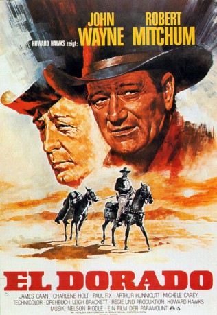
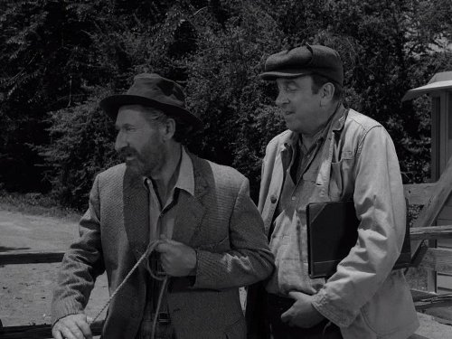
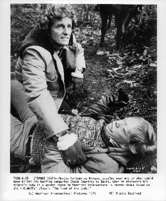
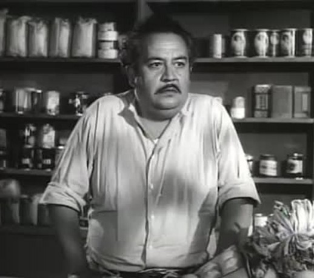
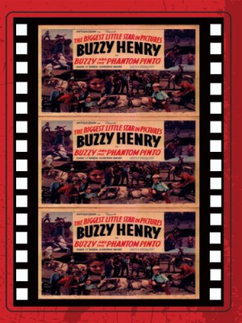

#6054 El Dorado
 
 IMDB-Wertung: 7.6 / 10
IMDB-Wertung: 7.6 / 10  Tomatometer: 100
Tomatometer: 100  Metascore: 0
Metascore: 0 
Der ziemlich lädierte Westernheld Cole Thornton John Wayne und sein alter Freund, der von Alkohol und Liebeskummer angeschlagene Sheriff J.P. Harah Robert Mitchum, sind längst nicht mehr so wild wie der Westen. Und selbst mit einem Meisterschützen wie dem jungen "Mississippi" Trahern James Caan an ihrer Seite ist es mehr als fraglich, ob sie gegen den Revolverhelden McLeod und dessen Kumpane eine echte Chance haben. Doch das Schicksal fordert sie noch einmal heraus ...
Jahr: 1967
Dauer: 126 Minuten
FSK: 12
Land: USA Studio: Paramount PicturesTonspuren: DD5.1 - ,
Untertitel:
Auflösung: 1080p (1920x1080) Größe: 9144 MB
Genre: Drama, Western, Liebe
Regisseur: Howard Hawks
Drehbuch: Dan Futterman
Soundtrack:
Darsteller:
 John Wayne als Cole Thornton
John Wayne als Cole Thornton Robert Mitchum als El Dorado Sheriff J.P. Harrah
Robert Mitchum als El Dorado Sheriff J.P. Harrah James Caan als Mississippi
James Caan als Mississippi- Charlene Holt als Maudie
 Paul Fix als Dr. Miller
Paul Fix als Dr. Miller-  Arthur Hunnicutt als Bull
- Michele Carey als Josephine, Joey MacDonald
 R.G. Armstrong als Kevin MacDonald
R.G. Armstrong als Kevin MacDonald Edward Asner als Bart Jason
Edward Asner als Bart Jason Christopher George als Nelse McLeod
Christopher George als Nelse McLeod- Marina Ghane als Maria
 Robert Donner als Milt
Robert Donner als Milt- Johnny Crawford als Luke MacDonald
- Adam Roarke als Matt MacDonald
 Jim Davis als Jim Purvis, Bart Jason's foreman
Jim Davis als Jim Purvis, Bart Jason's foreman- Don Collier als Deputy Joe Braddock , uncredited
-  Chuck Courtney als Jared MacDonald , uncredited
-  Nacho Galindo als Mexican Saloon Keeper , uncredited
- Joe Garcio als Bit Part , uncredited
-  Robert 'Buzz' Henry als Man Behind Piano , uncredited
 William Henry als Sheriff Dodd Draper , uncredited
William Henry als Sheriff Dodd Draper , uncredited- Riley Hill als Bit Part , uncredited
 John Mitchum als Elmer - Jason's Bartender , uncredited
John Mitchum als Elmer - Jason's Bartender , uncredited Dean Smith als Charlie Hagan - McLeod Gang , uncredited
Dean Smith als Charlie Hagan - McLeod Gang , uncredited- John Gabriel als Pedro
- Robert Rothwell als Saul MacDonald
- Victoria George als Jared's wife
- Anne Newman Bacal als Saul MacDonald's wife
- Diane Strom als Matt's wife
- Olaf Wieghorst als Swede Larsen, gunsmith
- Richard Andrade als Bit Part , uncredited
- Danny Borzage als Barfly , uncredited
- Charlita als Bit Part , uncredited
- Enrique Contreras als Bit Part , uncredited
- Linda Dangcil als Bit Part , uncredited
- Betty Jane Graham als Bit Part , uncredited
- Lars Hensen als Barfly , uncredited
- Chuck Horne als Joe , uncredited
- Rodolfo Hoyos Jr. als Bit Part , uncredited
- Bonnie Charyl Josephson als Bit Part , uncredited
- Joe King als Joe the Piano Player , uncredited
- Mike Letz als Bit Part , uncredited
- Frank Leyva als Bit Part , uncredited
- Myra MacMurray als Bit Part , uncredited
- Ruben Moreno als Bit Part , uncredited
- Deen Pettinger als Bit Part , uncredited
- Lee Powell als Bit Part , uncredited
 Chuck Roberson als Jason's Gunman , uncredited
Chuck Roberson als Jason's Gunman , uncredited- Anthony Rogers als Dr. Charles Donovan , uncredited
- Danny Sands als Bit Part , uncredited
Datei: X:\HD-Western-Collections\John Wayne\El Dorado (1967, FSK12, 1920x1080).mkv seit 25.04.2017
Festplatte: HD Eastern+Western
 Es gibt insgesamt 34 Filme in der Gruppe 'HD-Western-Collections\John Wayne'
Es gibt insgesamt 34 Filme in der Gruppe 'HD-Western-Collections\John Wayne'